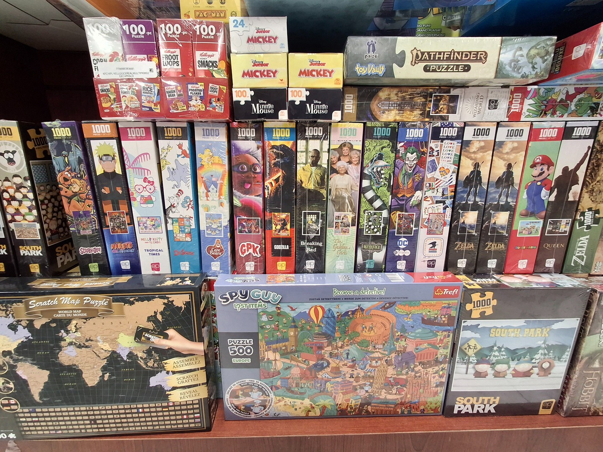
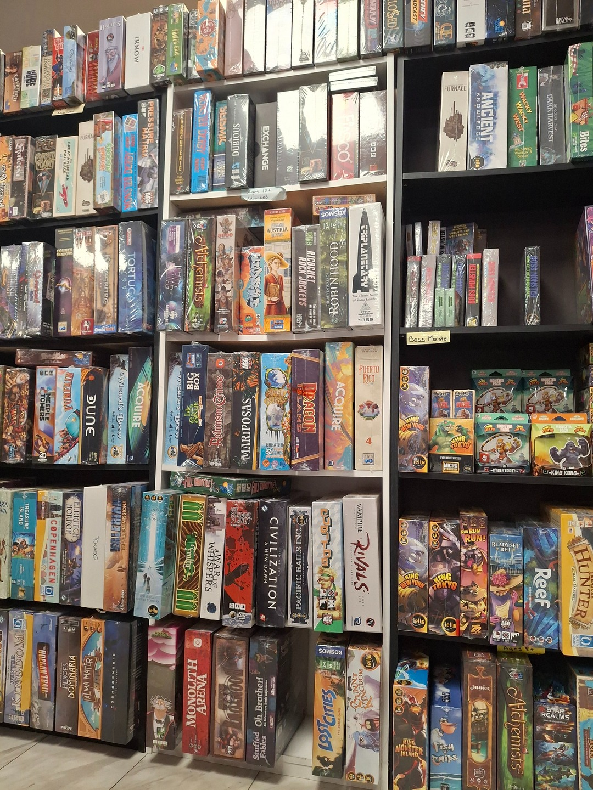
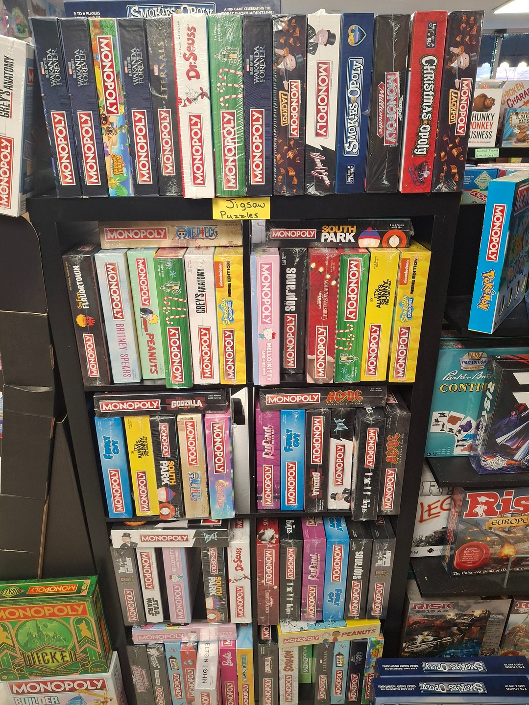
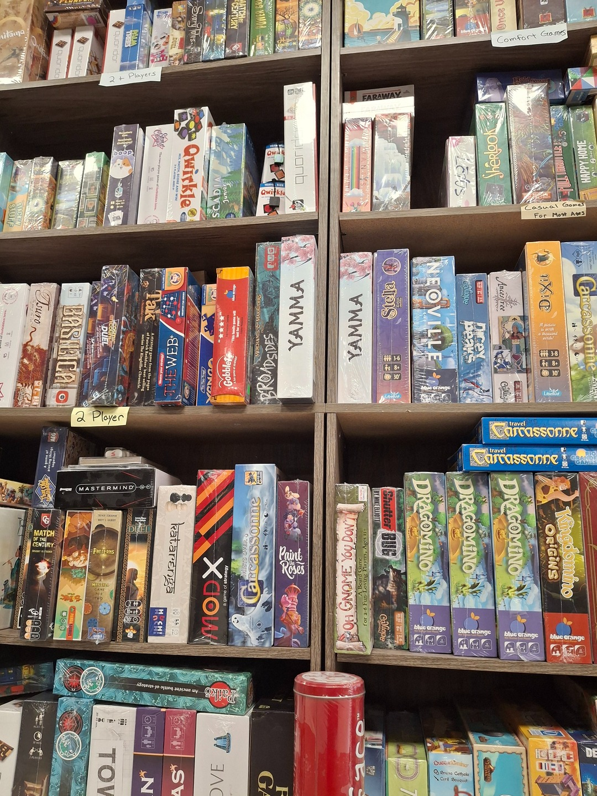
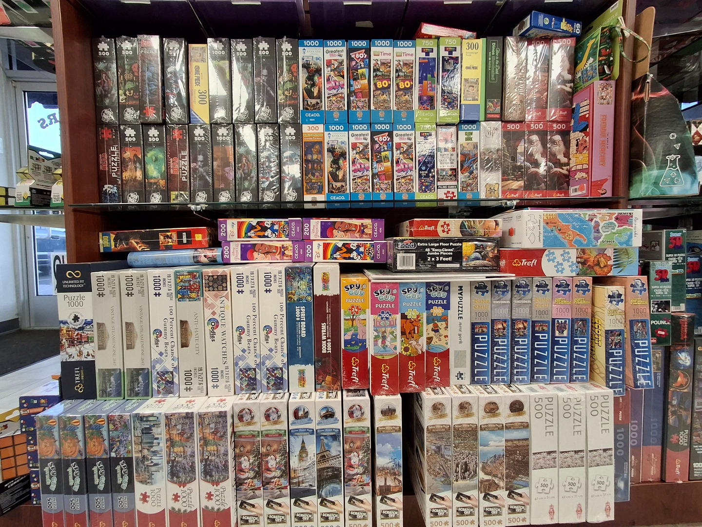

Board Games
Explore games for families, serious strategists, party nights, kids, collectors, puzzle lovers, and everyone in between.
Inventory Notice
Items listed below are examples of games and puzzles that may be in stock or have been in stock. Because Gamers Link carries a large amount of inventory and items change often, this page is not a live inventory system. Please call the store or stop by to check current stock.
Featured Game Types
Strategy Games
For players who enjoy planning, building engines, managing resources, and making big tactical choices.
Family Games
Easy-to-learn favorites that bring everyone to the table without needing a long rulebook.
Party Games
Fast, funny, loud, silly, and perfect for groups.
Puzzles
Licensed puzzles, classic jigsaws, maps, characters, and collector designs.
Find Your Next Game
Random Shelf Pick
Click for a fun game idea to look for when visiting.
Mini Recommendation Quiz
Choose your group style.
Strategy Games
- 7 Wonders
- Acquire
- Acropolis
- Alchemists
- Ancient Knowledge
- Ark Nova
- Arkham Horror
- Azul
- Brass
- Calico
- Carcassonne
- Castles of Burgundy
- Civilization
- Concordia
- Dune
- Earth
- Everdell
- Furnace
- Gloomhaven
- Great Western Trail
- Harmonies
- Isle of Skye
- Pandemic
- Planet Unknown
- Puerto Rico
- Terraforming Mars
- Tokaido
- Wingspan
Family Games
- Cascadia
- Carcassonne
- Dragon’s Breath
- Dragomino
- Kingdomino
- King of Tokyo
- Lost Cities
- Quoridor
- Ready Set Bet
- Sorry!
- Ticket to Ride
- Ticket to Ride Europe
- Ticket to Ride First Journey
- Ticket to Ride Legacy
- Tsuro
Party Games
- Blank Slate
- Codenames
- Codenames Pictures
- Colorology
- Five Second Rule
- Herd Mentality
- Hues & Cues
- Pass the Pigs
- Poetry for Neanderthals
- Quick Draw
- Relative Insanity
- Scattergories
- Taco Cat Goat Cheese Pizza
- Telestrations
- Yahtzee
- You Can’t Say Umm
Kids Games
- Animal Upon Animal
- Big Brain Academy
- BrainBox
- Bubble Stories
- Chutes and Ladders
- Go Cuckoo
- Hungry Hungry Hippos
- I Want My Teeth Back
- Memory
- Piggy Piggy
- Robot Quest Arena
- Sorry! Card Game
- Toss Across
Puzzles & Licensed Favorites
- Anime Puzzles
- Breaking Bad
- Care Bears
- Disney
- Garbage Pail Kids
- Godzilla
- Golden Girls
- Hello Kitty
- Joker
- Mario
- Mickey Mouse
- Minnie Mouse
- Naruto
- Pathfinder Puzzle
- Pokémon
- Queen
- Scratch Map
- Scooby-Doo
- South Park
- Spy Guy
- Super Mario
- World Map
- Zelda
Board Game Gallery







